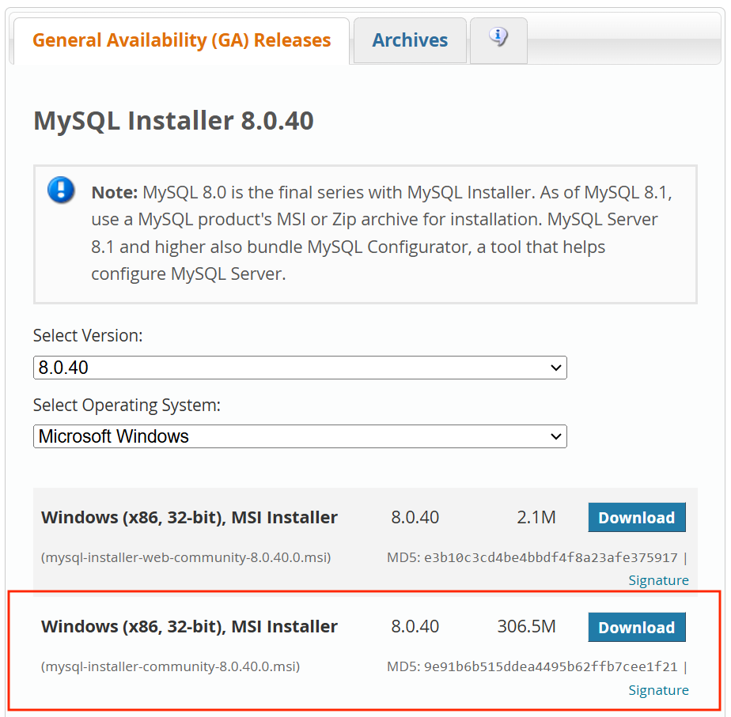

Cách Cài Đặt & Sử Dụng Mysql Workbench
1. Tải file cài đặt:
Tải MySQL Community Server, có thể tìm thấy trên trang chủ MySQL https://dev.mysql.com/downloads/ hoặc tải về tại đây.
Chọn phiên bản MySQL cần cài đặt và hệ điều hành thích hợp. Sau đó chọn Download file có kích thước lớn hơn.

Tại trang Download, chọn No thanks, just start my download.
2. Cài đặt MySQL Server và MySQL Workbench
Thực hiện cài đặt MySQL Community Server bằng cách nhấp đúp vào file đã tải về (file.msi) trên trình cài đặt MySQL.
Tại cửa sổ Choosing a Setup Type, chọn tùy chọn Custom (nếu bạn cần sử dụng nhiều tính năng hơn thì chọn Full). Sau đó chọn Next.
Tại cửa sổ Select Products, các bạn nhấp vào dấu (+) để chọn và thêm. Sau đó nhấn mũi tên trỏ sang bên phải.
Trong phần MySQL Servers, chọn phiên bản cài đặt MySQL Server.
Tiếp tục, ở phần Application section, thực hiện tương tự.
Sau khi chọn phiên bản cài đặt MySQL Server và MySQL Workbench. Nhấn chọn Next.
Tại cửa sổ Download, các bạn kiểm tra lại các phiên bản cần cài đặt, sau đó chọn Excute.
Sau khi quá trình tải về hoàn tất, chọn Next.
Tiếp tục chọn Excute.
Sau khi đã cài đặt xong, các bạn chọn Next.
3. Cấu hình Server
Ở bước này, bạn tiếp tục cấu hình MySQL Server. Chọn Next.
 Bạn chọn cấu hình loại Development Computer và Connectivity là TCP/IP, Port là 3306. Sau đó chọn Next.
Chọn Authentication Method, sau đó nhấn Next.
Nhập mật khẩu đăng nhập vào server rồi chọn Next.
Ở cửa sổ Windows Service, chọn thiết lập mặc định rồi chọn Next.
Ở cửa sổ Server File Permissions, để thiết lập mặc định rồi chọn Next.
Chọn Excute để tiến hành cấu hình server.
Khi cấu hình hoàn tất, bạn chọn Finish để tiếp tục.
Chọn Next.
Quá trình cài đặt hoàn tất! Chọn Finish.
Bạn chọn cấu hình loại Development Computer và Connectivity là TCP/IP, Port là 3306. Sau đó chọn Next.
Chọn Authentication Method, sau đó nhấn Next.
Nhập mật khẩu đăng nhập vào server rồi chọn Next.
Ở cửa sổ Windows Service, chọn thiết lập mặc định rồi chọn Next.
Ở cửa sổ Server File Permissions, để thiết lập mặc định rồi chọn Next.
Chọn Excute để tiến hành cấu hình server.
Khi cấu hình hoàn tất, bạn chọn Finish để tiếp tục.
Chọn Next.
Quá trình cài đặt hoàn tất! Chọn Finish.
4. Sử Dụng Mysql Workbench
Sau khi hoàn tất cài đặt, ứng dụng MySQL Workbench sẽ mở ra một cửa sổ như hình bên dưới, tại phần MySQL Connnections, các bạn nhấp đúp chuột vào phần được chỉ định như hình.
Đăng nhập bằng mật khẩu đã tạo trước đó để kết nối đến server.
 Sau khi kết nối đến server thành công, màn hình làm việc của MySQL Workbench sẽ hiện ra như hình
Sau khi kết nối đến server thành công, màn hình làm việc của MySQL Workbench sẽ hiện ra như hình
Return to Homepage